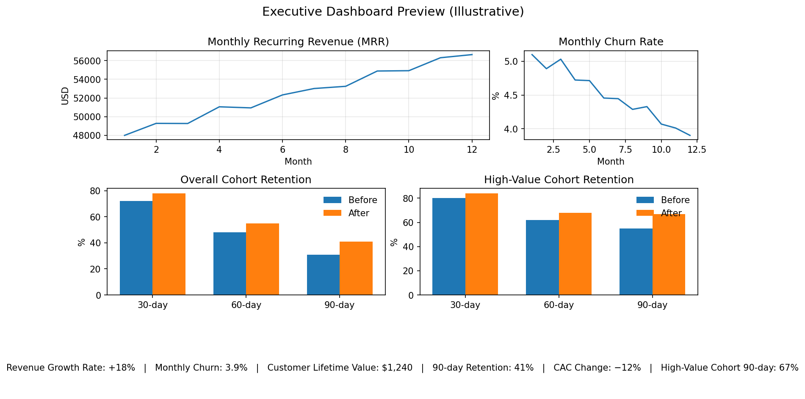

Performance Optimization for a Subscription-Based Business
Project Overview
A growing subscription-based business lacked structured KPI tracking and clear visibility into churn, recurring revenue trends, and customer lifetime value. Reporting was fragmented, limiting strategic decision-making.
Performance Gap
Before
- Fragmented KPI tracking
- Limited churn visibility
- Revenue trends misinterpreted
- Inconsistent reporting cadence
After
- Aligned KPI framework
- Cohort-based retention view
- Clear revenue segmentation
- Executive-ready reporting system
Objective
- Establish aligned performance metrics
- Improve recurring revenue visibility
- Identify churn drivers and retention gaps
- Create structured executive dashboard
Approach
- Structured transactional data and validated KPI logic
- Defined core KPIs (MRR, churn, CLV, retention)
- Built cohort retention views and trend monitoring
- Produced an executive dashboard + documentation
Dashboard Overview

Performance Snapshot
+18%
MRR Growth (12 mo)
3.9%
Monthly Churn
$1,240
Customer Lifetime Value
41%
90-Day Retention
−12%
CAC Change
Insights Identified
- Churn remained elevated during a specific seasonal window; retention lag was cohort-specific
- Growth was acquisition-led; retention improvements offered higher ROI
- CLV was previously overstated due to inconsistent churn definitions
- High-value cohorts retained materially better than baseline cohorts
Outcome
The engagement established KPI alignment, improved reporting clarity, and delivered a repeatable performance system to support revenue stability and growth decisions.
Interested in structured KPI alignment and performance clarity for your organization?
Request a Consultation